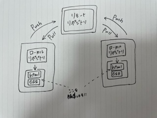

1.Gitについて
Gitとは、分散型バージョン管理システムのことです。
簡単にいうと、ファイルのバージョン管理が簡単にできるツールと言えます。
Gitで管理しているファイルであれば、コンピューター上でファイルの編集履歴を管理できるので、
編集前のファイルを残したまま、新しく編集したファイルを保存することができます。
なので古いバージョンから新しいバージョンまでの管理が簡単です。
Gitでできること
Gitが分散型バージョン管理システムと呼ばれる理由は、このような特徴があるからです。
- 古いバージョンに簡単に戻せる
- 新旧のファイルを一元管理できる
- 編集した履歴を複数人で共有できる
- 複数人で修正した部分を一つに統合できる
リポジトリってなに？
リポジトリは、ファイルやディレクトリの状態を記録する場所のことです。
Gitのリポジトリは、まず以下の2種類に分けられます。
- 専用のサーバに配置して複数人で共有するためのリモートリポジトリ
- ユーザ一人ひとりが利用するために、自分の手元のマシン上に配置するローカルリポジトリ
これらを図式化したものがこちらです。

参考文献
履歴を管理するリポジトリ
2.HTMLについて
HTMLとは「
Hyper
Text
Markup
Language」のことで、
WEBページを作成するための言語です。
文字は普通のテキストだけでなく、「見出し」にしたり、
「太文字」や「文字の色」を変更して強調したり、
「下線」を入れて装飾したりすることもあります。
HTMLタグとは
Webページなどを記述するマークアップ言語であるHTMLで、
表示システム側に伝達する制御情報を記す記法であり、
小なり記号「<」と大なり記号「>」で囲まれた部分をいいます。
ex)
- 見出し
＜h1＞見出し大＜/h1＞
＜h2＞見出し中＜/h2＞
＜h3＞見出し小＜/h3＞
見え方
見出し大
見出し中
見出し小
- フォントサイズ
＜font size="1"＞フォントサイズ1＜/font＞
＜font size="4"＞フォントサイズ4＜/font＞
＜font size="7"＞フォントサイズ7＜/font＞
見え方
フォントサイズ1
フォントサイズ4
フォントサイズ7
- 箇条書き
＜ul＞
＜li＞りんご＜/li＞
＜li＞いちご＜/li＞
＜li＞ぶどう＜/li＞
＜/ul＞
見え方
- りんご
- いちご
- ぶどう
- 番号リスト
＜ol＞
＜li＞らいおん＜/li＞
＜li＞しまうま＜/li＞
＜li＞とら＜/li＞
＜/ol＞
見え方
- らいおん
- しまうま
- とら
他にも使えるタグがたくさんあります！！
HTMLタグ一覧
参考文献
HTMLとは？初心者向けにタグの種類と使い方の基本を解説！